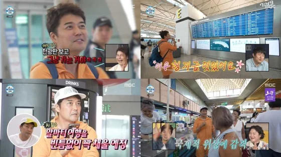

[속보]'나혼산' 전현무 즉흥여행 논란 결국 모두 인정 "제작진 불찰" : 네이트 연예

'나혼산' 제작진 공식입장
"전현무의 카자흐스탄 여행 편은 평소 즉흥 여행을 즐기는 전현무의 일상을 제작진이 함께 따라가는 방식으로 진행됐다."
"방송에서 표현한 '즉흥 여행'은 전현무가 목적지와 항공권을 미리 정하지 않은 채 당일 여행지를 결정해 떠나는 방식을 의미했다"
"해당 방송을 위해 제작진은 해외 촬영 가능성에 대비해 항공편과 촬영 여건을 미리 검토했다."
"제한된 시간 안에 이동할 수 있는 근거리 국가들을 중심으로 여러 가능성을 살펴봤으며,
전현무가 평소 관심을 보여온 여행지와 당시 항공편 상황 등을 종합적으로 고려했을 때 카자흐스탄을 선택할 가능성이 크다고 판단했다"
"카자흐스탄행이 결정될 경우 곧바로 촬영에 대응할 수 있도록 스태프의 항공권을 미리 발권하고 현지 촬영 협조도 요청해뒀다"
"전현무가 당일 다른 목적지를 선택하거나 카자흐스탄행 항공권을 구하지 못할 경우에는 해당 스태프 항공권은 취소하고,
그 과정에서 발생하는 예상치 못한 상황 역시 여행의 한 부분으로 자연스럽게 담아낼 계획이었다"
"전현무는 당일 공항에서 출발 가능한 항공편을 확인한 뒤 카자흐스탄행 항공권을 현장에서 직접 발권했다."
"다만, 방송에서 '즉흥 여행'이라는 표현을 강조하는 과정에서 여행과 촬영의 모든 과정이 아무런 사전 준비 없이 진행된 것으로 받아들여질 수 있다는 점을 충분히 고려하지 못했다"
"알마티시 관광청으로부터 해외 촬영에 필요한 행정 절차와 현장 진행을 위한 촬영 협조를 받았다."
"앞서 밝힌 '지원이 없었다'는 입장은 금전적 협찬이나 제작비 지원이 없었다는 취지였으며,
이 표현이 현지의 행정적·촬영 협조까지 전혀 없었다는 의미로 받아들여질 수 있어 이를 보충 설명드렸다"
"이 과정에서 충분한 설명을 드리지 못해 혼선을 드린 점 사과드린다"
요약
1. 전현무 편은 즉흥 여행 컨셉으로 기획했다
2. 제작진은 사전 검토를 통해 전현무의 카자흐스탄 선택 가능성이 높다고 판단해 미리 제작진용 표를 확보해뒀다
3. 그와 별개로 전현무는 당일 항공편 확인 뒤 카자흐스탄 표를 직접 현장해서 발권했다
4. 어느 정도 제작진의 사전 준비는 있었다
5. 우리가 금전 지원받은건 아니라서 지원 없었다고 했다
흠...?

ㅋㅋ 2번